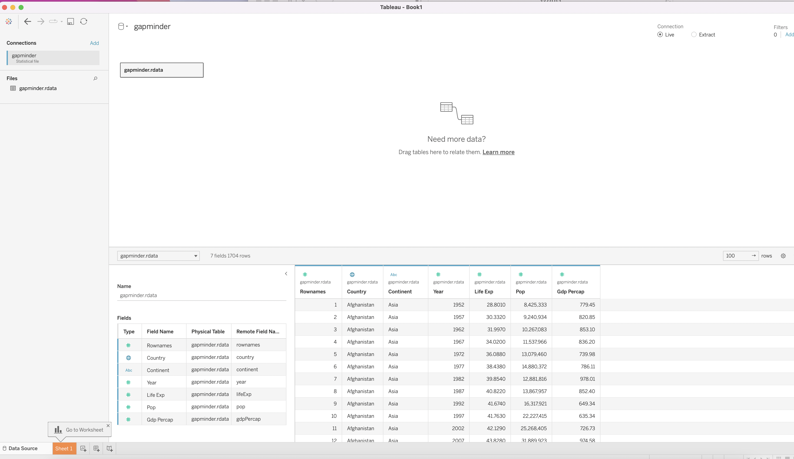
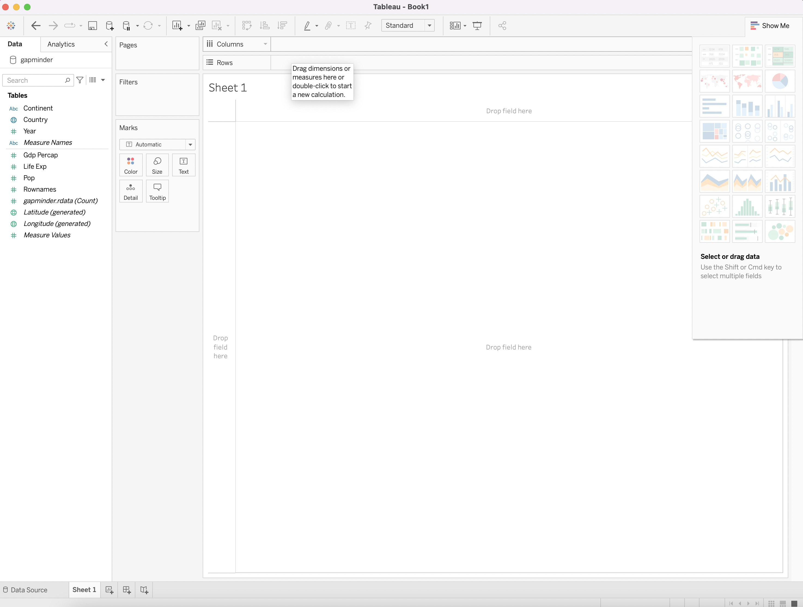
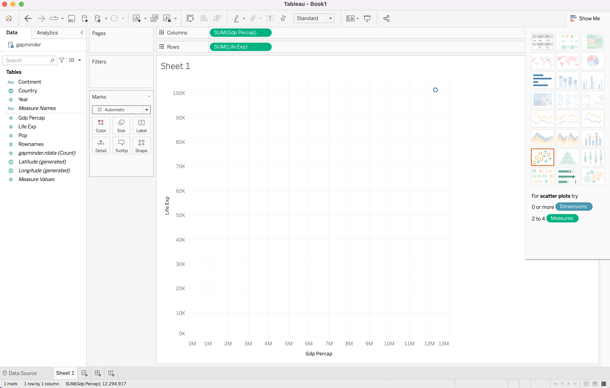
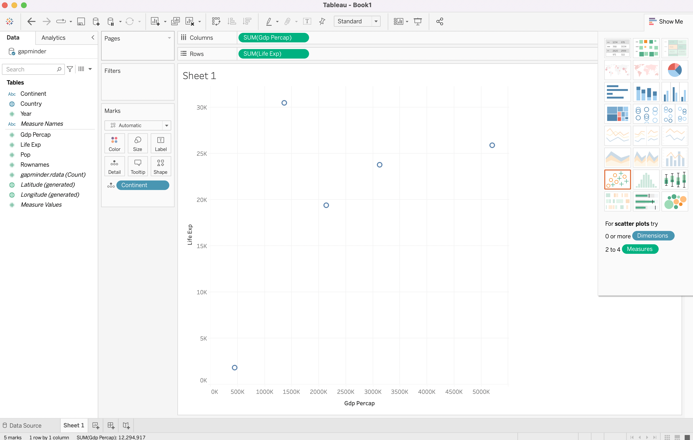
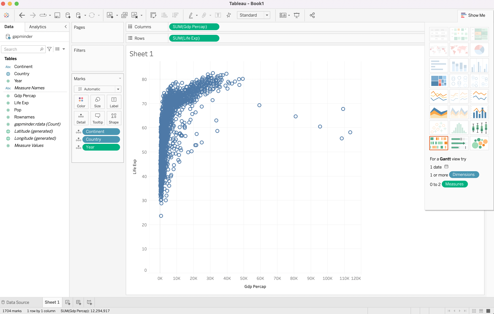
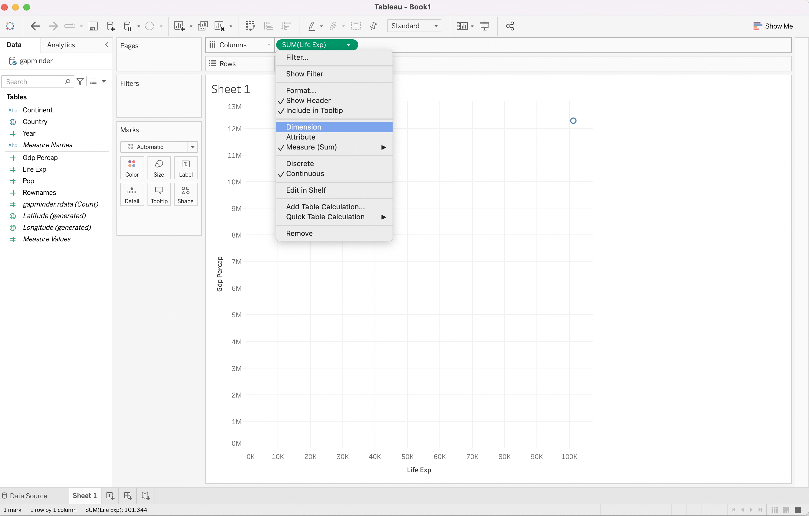
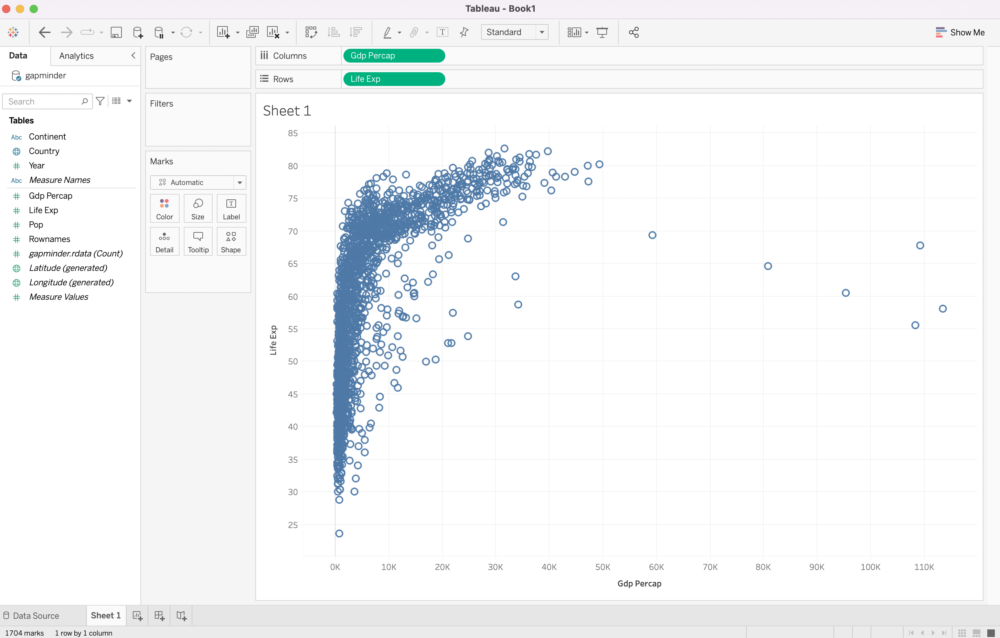
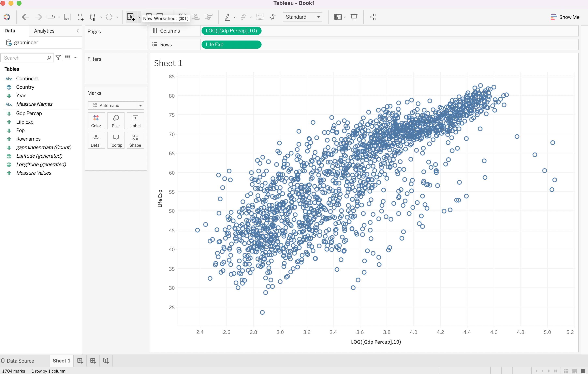
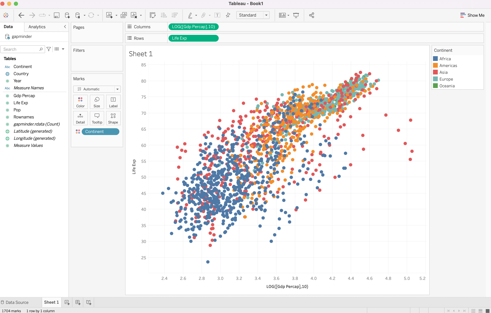

Before we start
- We only have 2 sessions
- introduction to Tableau?
- compare it with R
Strengths of Tableau and R
- Data representation in R
- commandline approach
- flexible but not intuitive
- slow learning at the beginning
- Data representation in Tableau
- visual interface
- relatively easy
- can do calculations, but not as much as R
Unkind introduction to Tableau
- Recommend: Tableau Desktop
- we only have 2 weeks, so trial version is fine
- academic license?
- learning by doing
- Data camp / LinkedIn Learning
- backward learning
File types
- Source files: Connect
- good compatibility
- explore it
- Tableau File Types
- Tableau workbook (.twb)
- include a visualization without source data
- Tableau packaged workbook (.twbx)
- include extracted data and visualization
Connect your data
- Return to gapminder
- Tableau understands R files as Statistical file

Playground

- Let's mimic what we have done
Interactive interface
- Figure out median population by continent
Scatterplot?

- What's going on?
- Drag Continent into Marks
Scatterplot

- Let's interpret this
- Drag your cursor into Marks
- Dimensions!
Scatterplot

- Ok, looks similar
- Better way?
Scatterplot

- Click Dimension on both variables
Scatterplot

- Can we transform GDP per capita?
- use log function, remember?
Scatterplot

- drag Continent in the color Marks
- change the Shape
Scatterplot

- use log(pop) in the color Marks
Work with more than one data sets
Work with more than one data sets